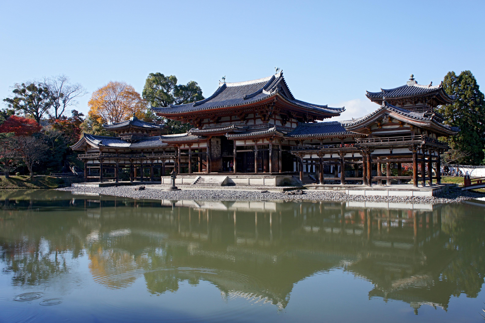
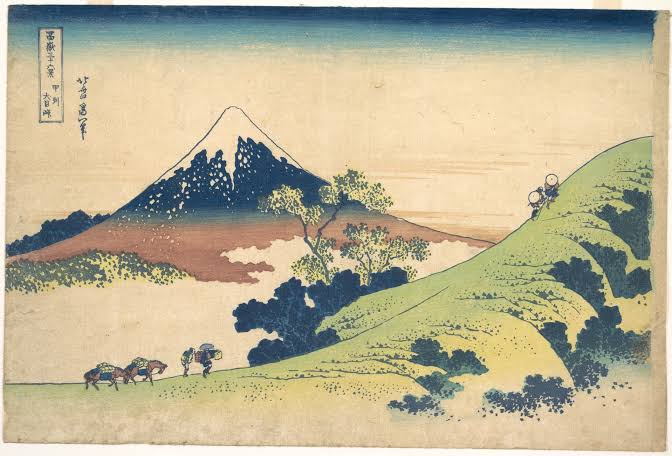
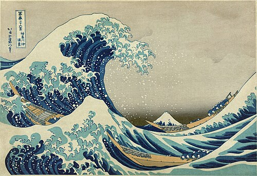
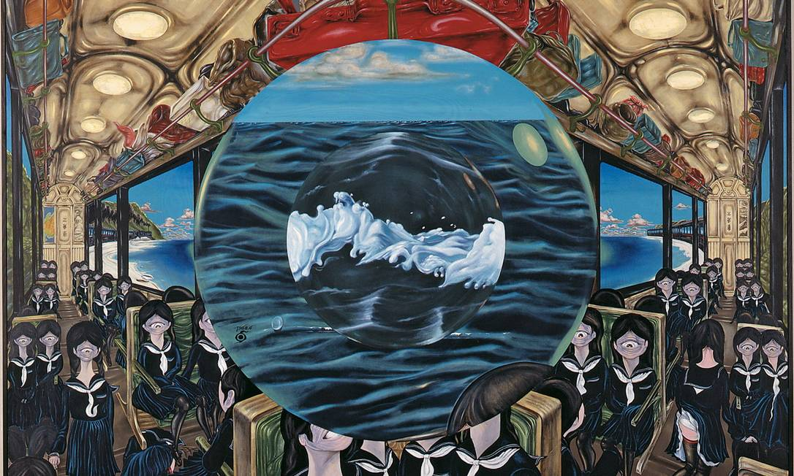
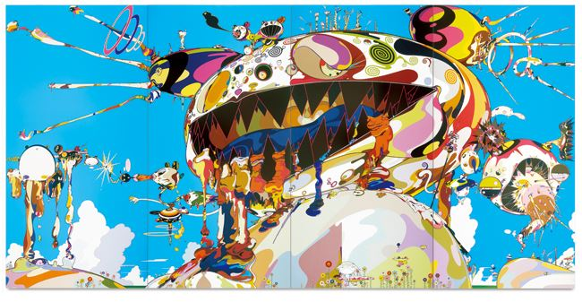

|
||||

Periodos da arte |
|||
|
 Arte TradicionalInfluencias religiosas e natureza na arte japonesa. |
 Arte ModernaGravura que retratam o coitidiano, paisagens e a vida urbana. |
 ModernizaçãoContato com o Ocidente e novas formas de expressão artistica. |
 Arte ContemporâneaTradição e inovação em diálogo no cenário atual japones. |
|
|
||||||||||||||||